Vscode - C/C++ Configuration
To Start
- 安装Vscode
- 请前往https://code.visualstudio.com/下载你所需要的Vscode版本
下载完了之后，你就可以开始配置C++的运行环境了
Install the extension
- 打开Vscode
- 选择拓展选项卡或者使用快捷键
Ctrl+Shift+X - 搜索C++
- 安装
Set up for your C++ environment
下载Mingw64文件
- 打开浏览器
- 前往Releases · niXman/mingw-builds-binaries (github.com)下载MingW64文件
- 选择下列图片中标出的版本
- 解压，获得其中的Mingw64文件夹并放在你想放的位置
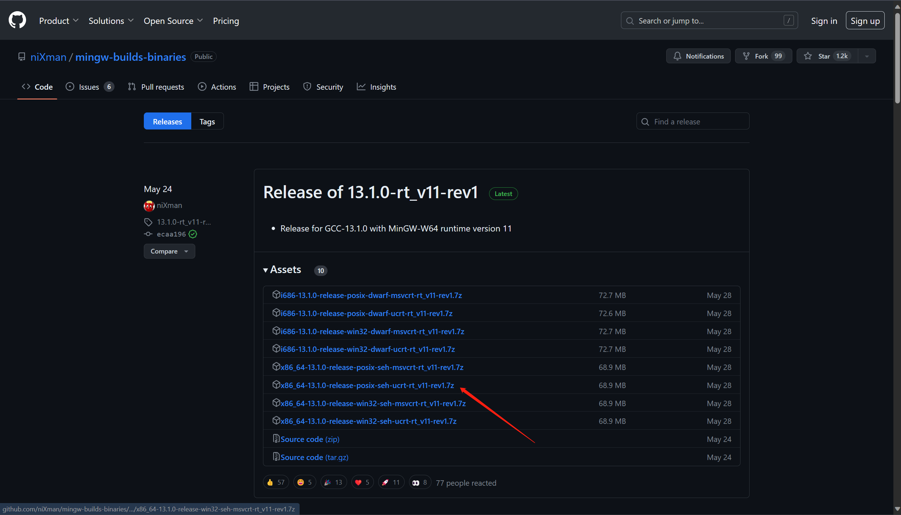
配置环境变量
- 直接
win + S快捷键搜索环境变量，进入该选项卡 - 点击环境变量
- 在用户变量和系统变量中找到Path，进入编辑
- 新建，并将刚才下载的Mingw64中的bin文件夹的路径填入
- 完成！
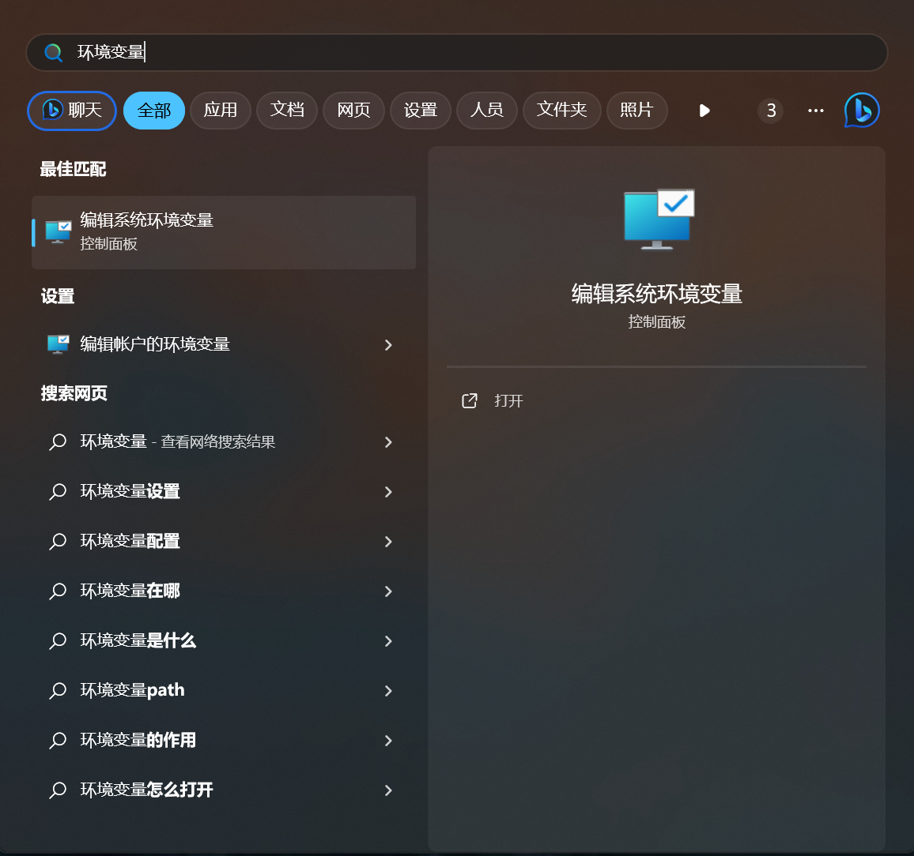
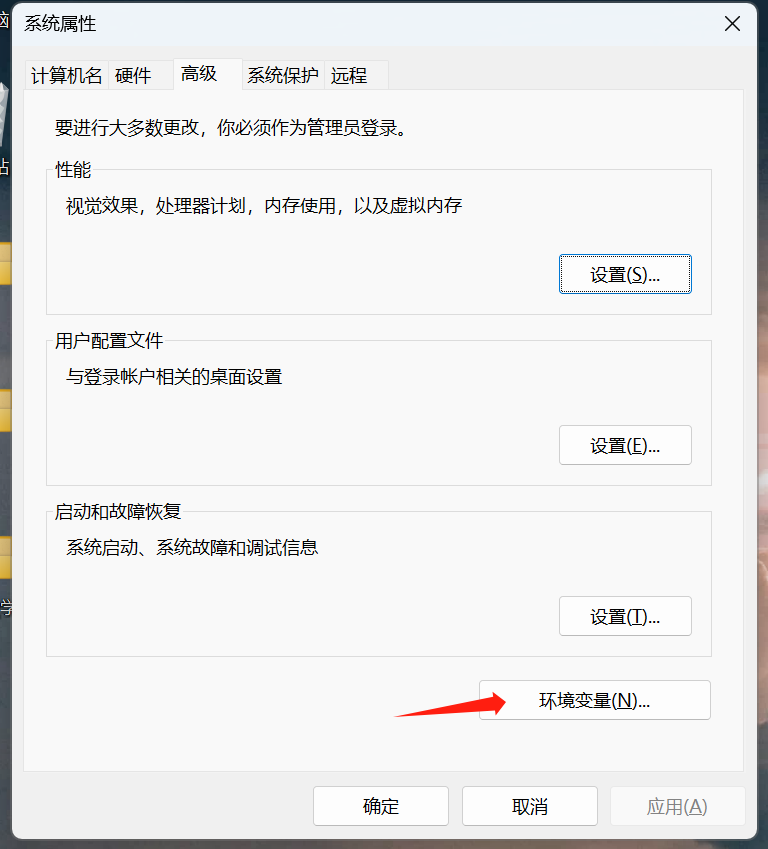
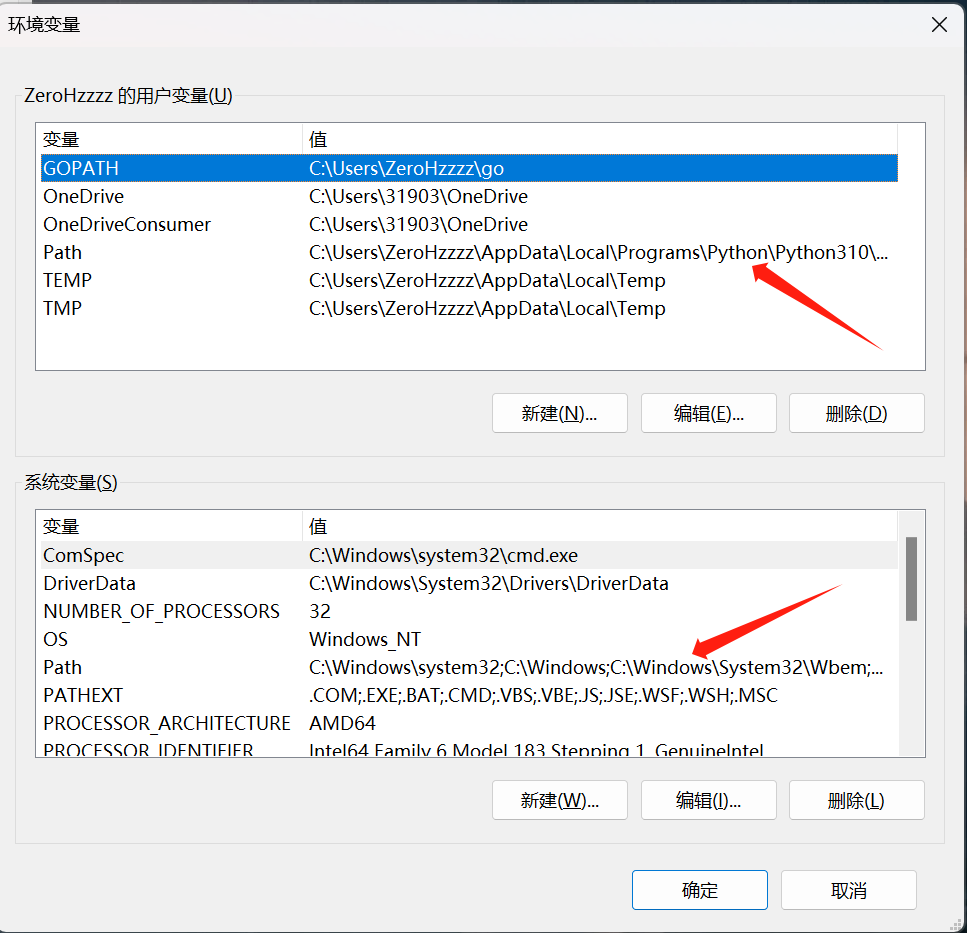
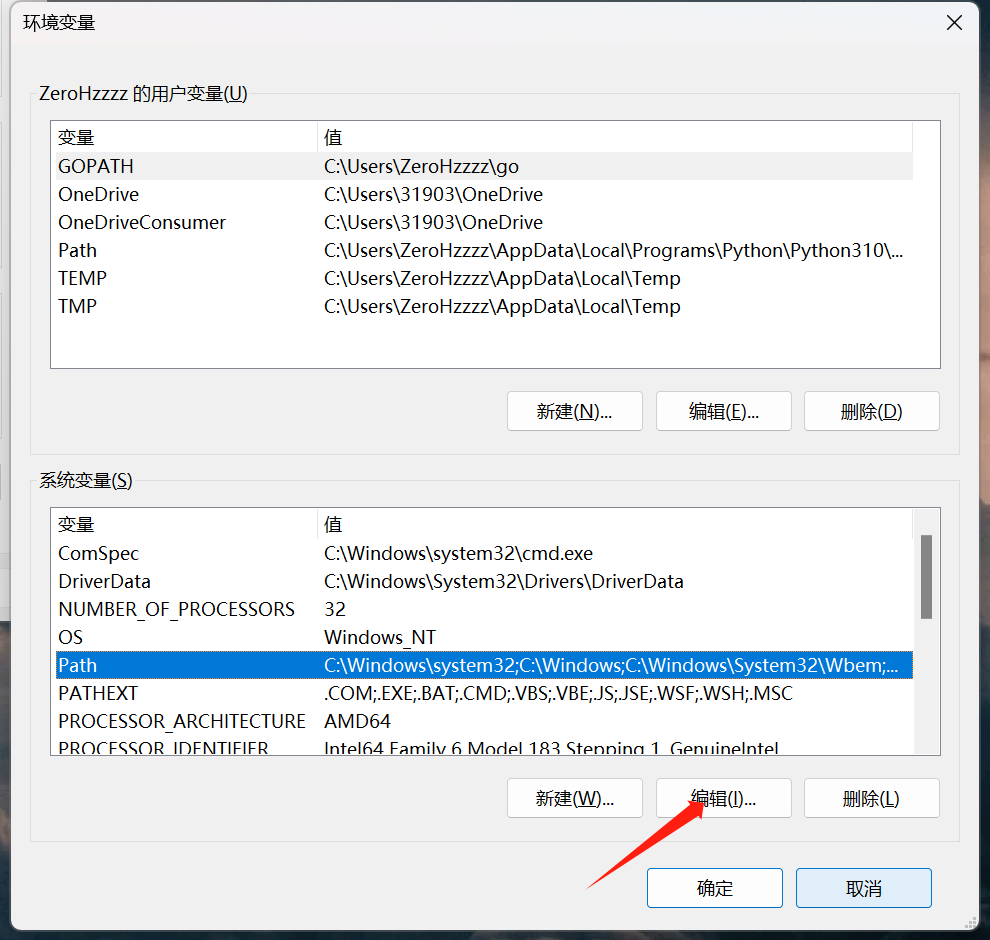
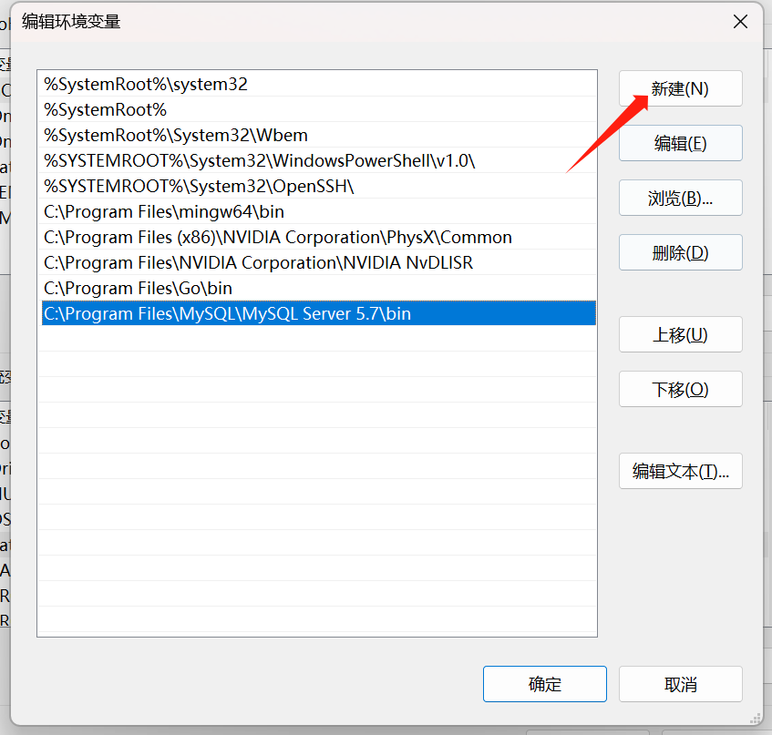
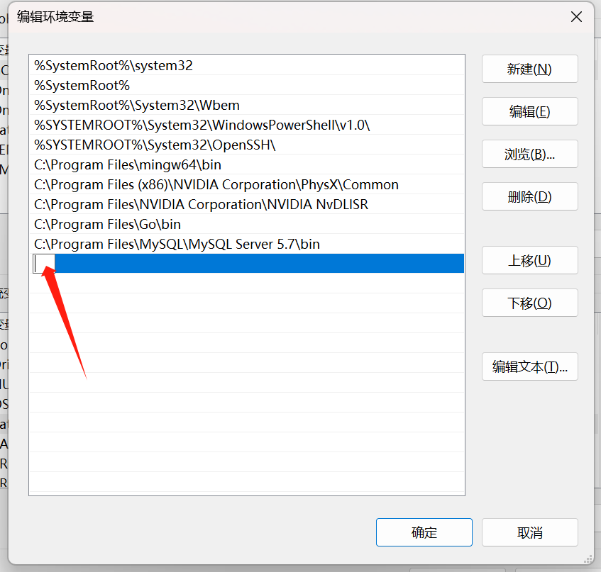
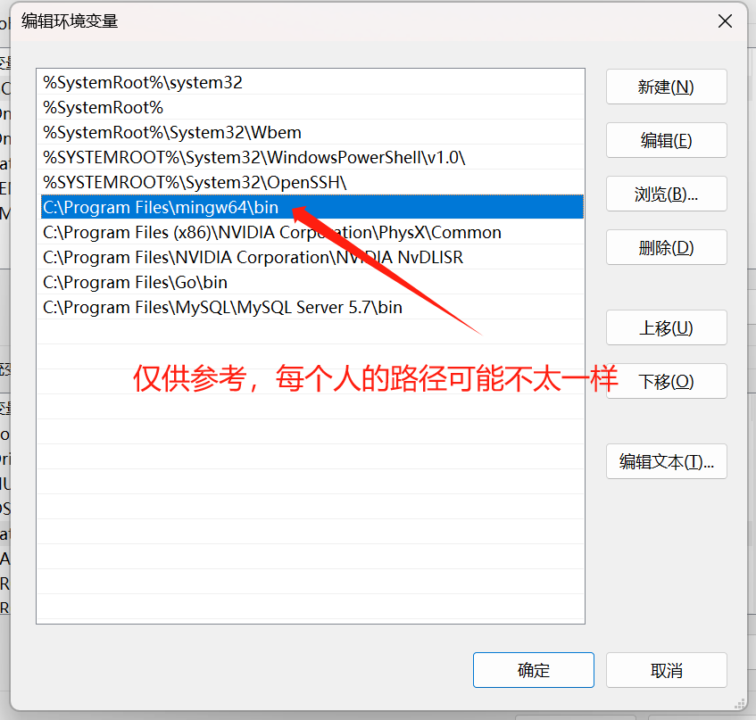
点击确定，完成！
Check
- 直接
win + R，输入cmd并运行，打开终端 - 输入
gcc -v，如果出现下列画面就说明配置成功了 - 完成！
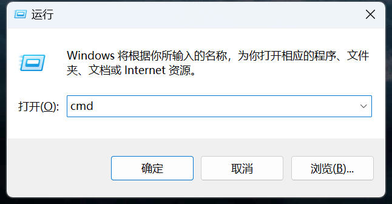
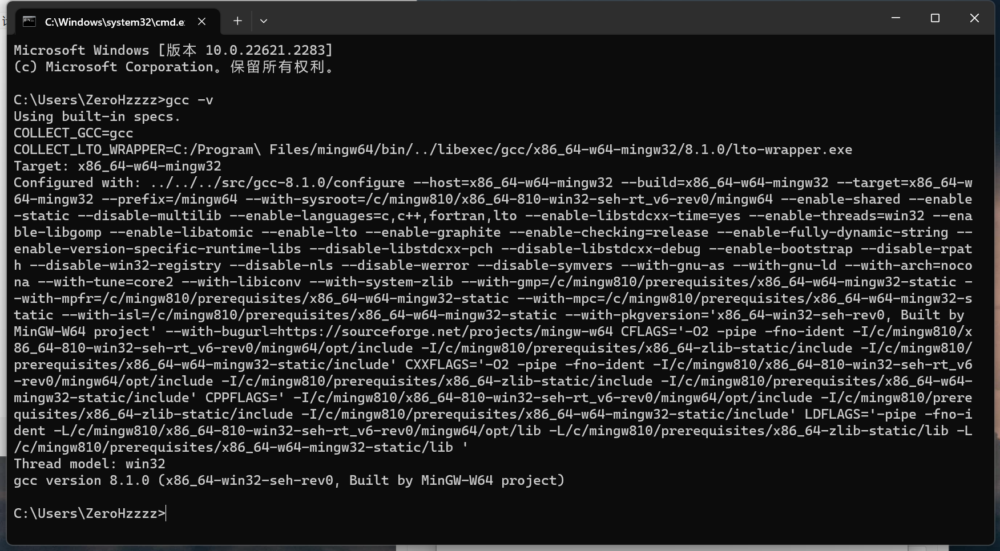
Create and Run a C++ file
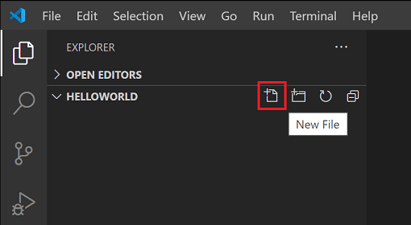
create a new file called helloworld.cpp
复制，粘贴！
1 | |
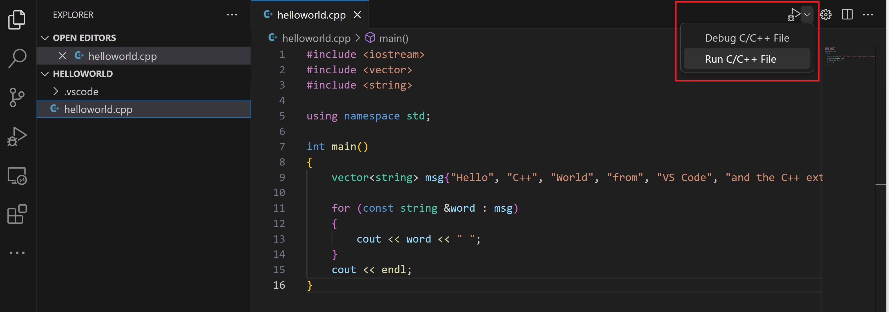

仅在第一次运行 helloworld.cpp 时提示您选择编译器。该编译器将成为tasks.json 文件中设置的“默认”编译器

拿下！
好好好，现在你就可以尽情的Coding了，可能还有一些其他的零碎配置
有空我再更新（
本文转自 https://www.cnblogs.com/ZeroHzzzz/articles/17711579.html，如有侵权，请联系删除。
Vscode - C/C++ Configuration
http://zerohzzzz.github.io/2023/11/11/Vscode-Configuration-C++/